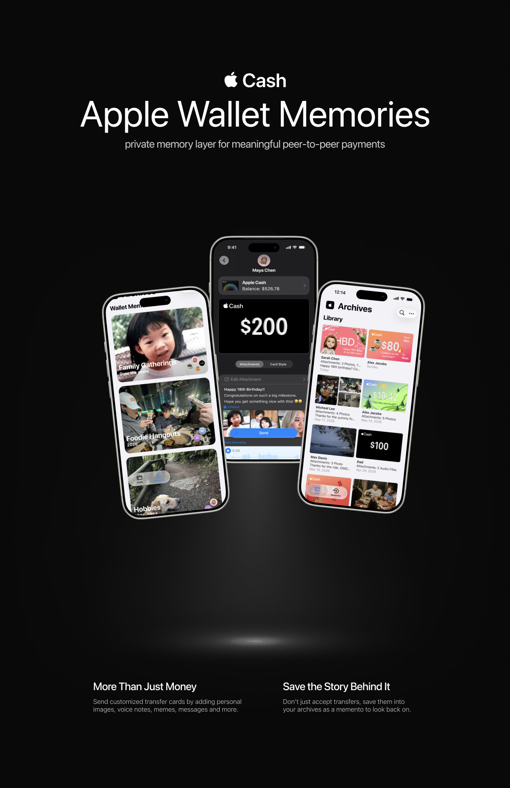
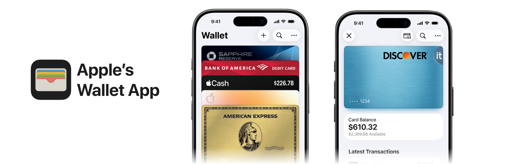

Apple Wallet Memories explores how a traditionally functional financial tool can support emotional connection and memory preservation. While Apple Wallet efficiently manages payments, transfers, and passes, the stories behind meaningful experiences are rarely captured within the platform. Through user research and iterative design, this project reimagines Apple Wallet as a space for preserving and revisiting the moments behind everyday transactions.
Add a new creation-centric feature to a typically non-creation-oriented experience.

Apple Wallet is designed around efficiency and simplicity, using a stack of digital cards to help users quickly access payments, passes, tickets, and financial services. However, the financial interactions are purely transactional, offering little opportunity for self-expression or personalization.

During the exploration of Apple Wallet, I discovered Apple Cash which allows users to send and request money directly through Messages.
Although Apple Cash makes transactions fast and convenient, exchanges often rely on content outside of the transaction itself. Users frequently send photos, screenshots, details, and messages alongside payment requests to provide context or add a personal touch. Over time, these moments become buried within everyday conversations, making them difficult to revisit. This revealed an opportunity to bring payments and their associated memories together in a single experience while maintaining the simplicity users expect from Apple Cash.
One of the project's strengths was its ability to build upon Apple's existing ecosystem. Incorporating familiar elements such as Apple Cash, Messages, Memojis, and contacts helped the concept feel intuitive and consistent with Apple's existing user experience. Future iterations could further refine the features and explore deeper integration with Apple services such as Photos Memories and Apple Intelligence.